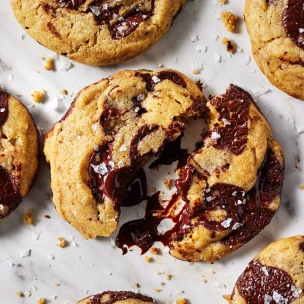

Home
Chocolate Chip Cookies

INGREDIENTS:
- 2 Cups all-purpose flour
- 1 teaspoon baking soda
- 1 teaspoon sea salt
- 3/4 Cup unsalted butter
- 1/2 Cup packed brown sugar
- 1/2 Cup granulated sugar
- 1 large egg
- 1 large egg yolk
- 2 teaspoons vanilla extract
- 1 heaping cup dark chocolate chips
Steps
- In a medium bowl, whisk together the flour, baking soda, and salt.
- In a large bowl, whisk together the melted butter, brown sugar, and granulated sugar.
Add the egg and the egg yolk and whisk until well combined and no streaks of egg
white remain. Whisk in the vanilla.
- Add dry ingredients to the wet ingredients and mix with a spatula.
when the dry and wet ingredients are mostly combined, add in the
chocolate chips and mix until a soft cookie dough forms and no
dry flour remains.
- Cover and refridgerate for at least 30 minutes and up to 2 days.
Cookie dough just chilled for 30 minutes will yield flatter
cookies that spread more as bake. Cookie dough chilled for 2 hours
or more will yield thicker cookies that spread less.
- Preheat oven to 350° and line two large baking sheets
with parchment paper.
- Use a 2-tablespoon cookie scoop to scoop the dough on to
baking sheets leaving at least 2 inches between cookies.
Bake one sheet at a time, for 9 to 11 minutes, or until the
edges of the cookie are golden brown but the tops will look
underdone when you take them out of the oven, but they will
set up as they cool.
- Let cool on baking sheets for 10 minutes before transferring
to a wire rack to cool completely